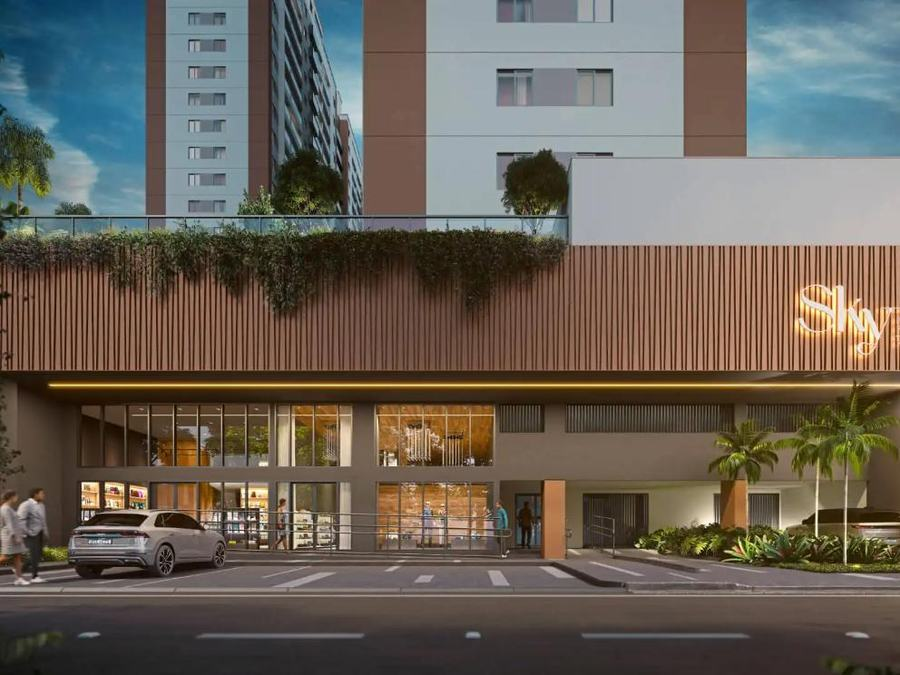
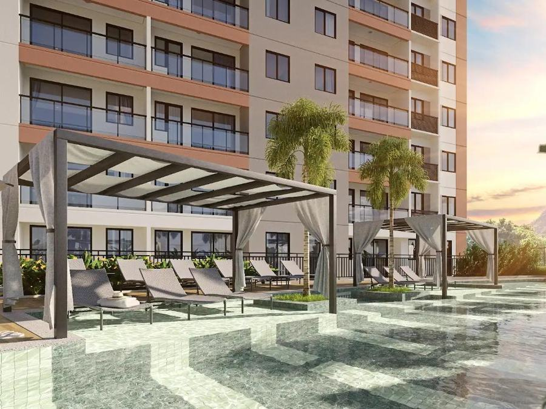
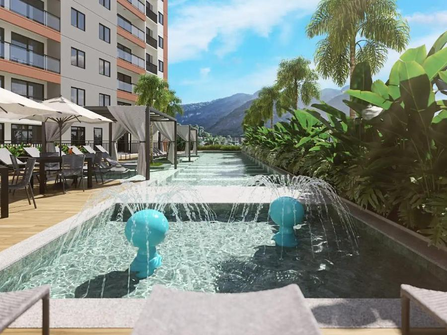

Galeria

Rooftop, piscina e portaria



Apartamentos de 2 e 3 quartos com suíte e varanda gourmet, rooftop com piscina de raia, spa e coworking, na principal avenida da cidade, perto da Unigranrio.
*Valores e condições sujeitos a alteração conforme tabela vigente da incorporadora e disponibilidade.
Piscina com raia de 25m, deck molhado, Sky Bar, Sky Deck e Sky Party.
SPA com hidro e espaço de massagem, sauna, espaço yoga e academia.
Na principal avenida de Nova Iguaçu, a 3 min da Supervia e 8 min do Shopping Nova Iguaçu.
Segurança e tecnologia em todas as unidades, com acabamento em porcelanato e granito.



*Plantas, metragens e valores meramente informativos. Comercialização sujeita a aprovação cadastral e de crédito. Confirme com a corretora.
Supervia (3 min), Fórum de Nova Iguaçu (4 min).
Shopping Nova Iguaçu (8 min), Assaí (5 min), Atacadão (15 min).
E. E. Mons. João Musch, Elite, Unigranrio (7 min).
Hospital Amil (6 min), Fórmula do Corpo (5 min), Bodytech (7 min).
Te mostro as plantas disponíveis e simulo o financiamento do Sky Mário Guimarães de acordo com sua renda — sem compromisso.
Simular agora no WhatsAppNa Avenida Dr. Mário Guimarães, 768, no Centro de Nova Iguaçu, a principal avenida da cidade.
Sim, as obras já começaram. A Crisla confirma o cronograma atualizado de entrega.
Rooftop com piscina de raia de 25m, espaço fitness, SPA com hidro, sauna, churrasqueiras gourmet, lounge party e mais de 15 opções de lazer.